Temple Gallery
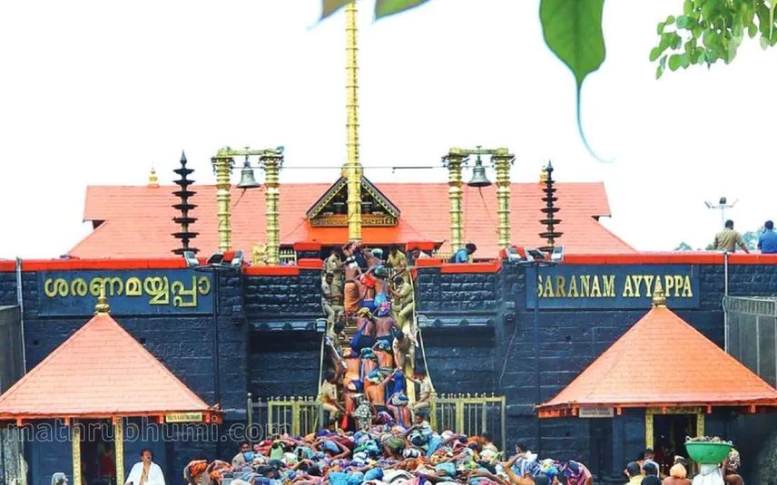
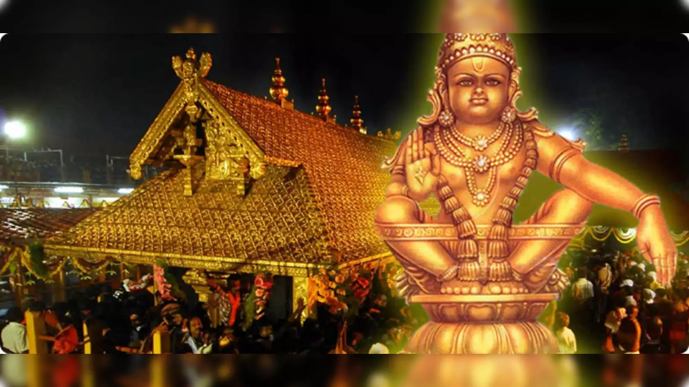


 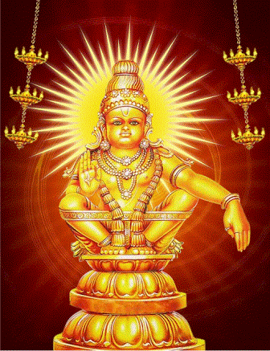
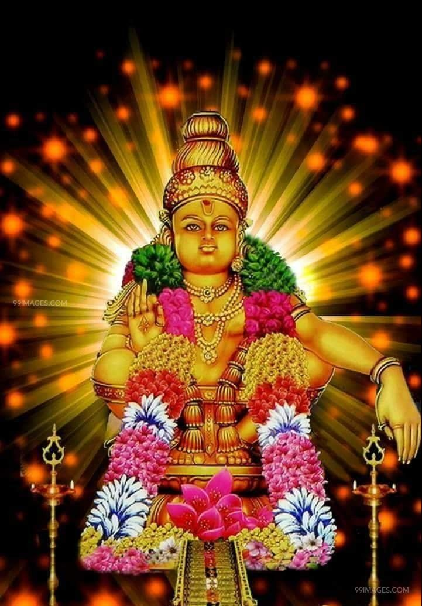
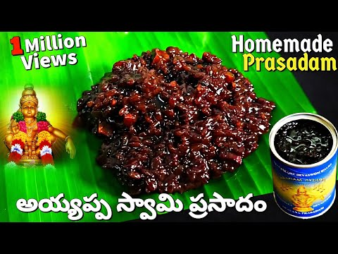
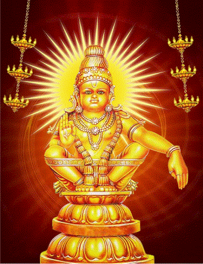
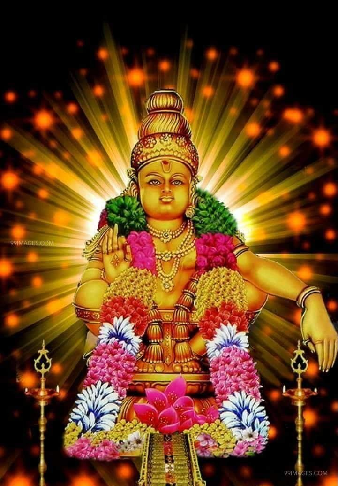
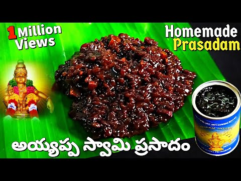

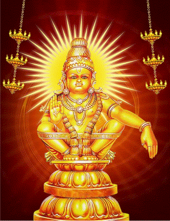
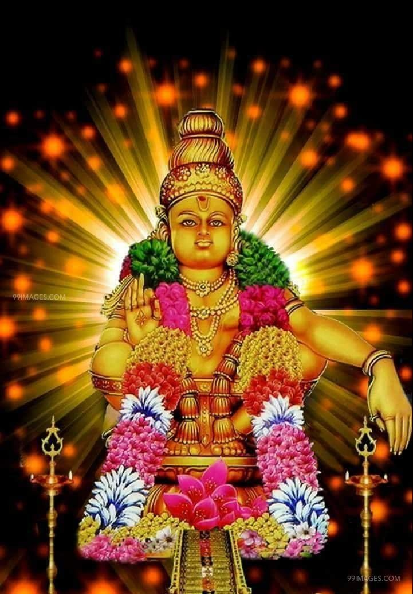
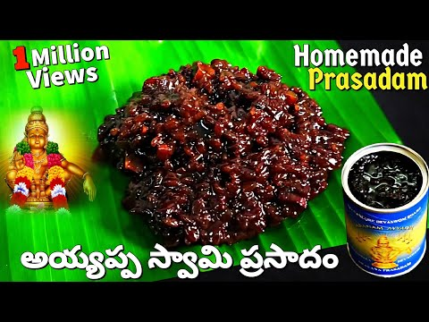
శబరిమల ఆలయం కేరళ రాష్ట్రంలో ప్రసిద్ధ అయ్యప్ప స్వామి ఆలయం, సంవత్సరానికి లక్షలాది భక్తులు ఇక్కడికి యాత్ర చేస్తారు.
The Sabarimala Temple is a renowned pilgrimage site in Kerala, attracting millions of devotees, especially from November to January.
శబరిమల ఆలయం కేరళలోని పతనంతిట్ట జిల్లాలో ఉంది.
The temple is nestled in the forested Pathanamthitta district, near the Pamba River.
A major city and stop for refreshment.
Another significant stop on the route.
A major junction city; many buses from Hyderabad stop here for passenger changes.
A town near Bangalore, often used as a stopping point.
A common rest stop for buses traveling south.
Another major city where buses may stop.
A town in Kerala that could serve as a stopover.
A major city where you can transfer to a bus heading to Pamba.
An alternative stop before heading to Pamba.
The nearest bus station to Sabarimala.
The final destination.
Total Distance from Hyderabad to Pamba: Approximately 1,200 - 1,500 km, depending on the exact route and stops.
Distance from Pamba to Sabarimala: Approximately 4-5 km.
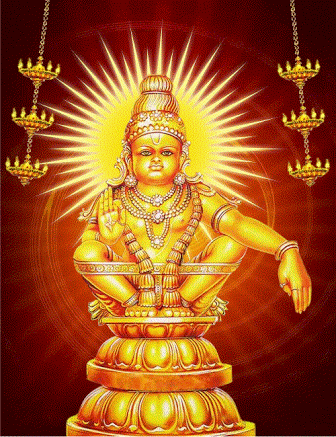
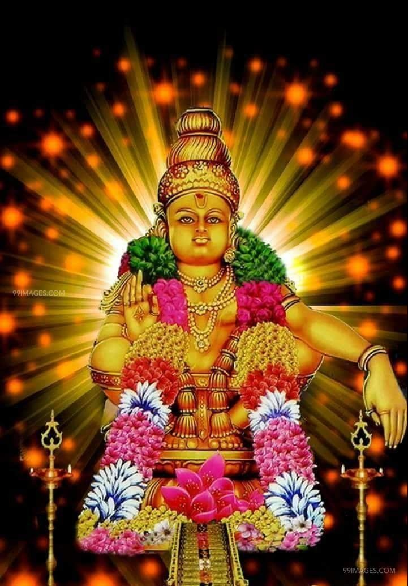
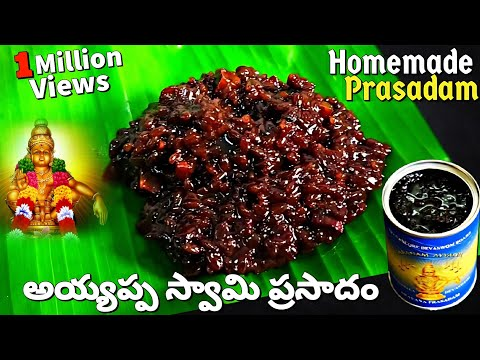
The temple is open from 4:00 AM to 11:00 PM during the pilgrimage season.
| పూజ పేరు / Name of Puja | సమయం / Time |
|---|---|
| నాదస్వర పూజ / Nadaswaram Pooja | ఉదయం 4:00 AM |
| ఉషపూజ / Ushapuja | ఉదయం 5:00 AM |
| నివేద్యం / Nivedyam | ఉదయం 5:30 AM |
| నేయ్యాభిషేకం / Neyyabhishekam | ఉదయం 5:00 AM - 11:00 AM |
| నిర్మల్య దర్శనం / Nirmalya Darshanam | ఉషపూజ తరువాత |
| మహాగణపతి హోమం / Maha Ganapathi Homam | ఉదయం 6:00 AM |
| పంచామృత అభిషేకం / Panchamritha Abhishekam | ఉదయం 7:00 AM |
| అభిషేకం / Abhishekam | ఉదయం 8:00 AM |
| మలార్ నైవేద్యం / Malar Naivedyam | ఉదయం 8:30 AM |
| మధ్యాహ్న పూజ / Madhyahna Pooja | మధ్యాహ్నం 12:00 PM |
| దీపారాధన / Deeparadhana | సాయంత్రం 6:30 PM |
| అతజ పూజ / Athazha Pooja | సాయంత్రం 7:30 PM |
| హరివరాసనం / Harivarasanam | రాత్రి 10:00 PM |
శబరిమలలో ప్రధాన పండుగలు మకర విలక్కు మరియు మండల పూజ. ఈ పండుగలు శ్రద్ధగా, భక్తితో జరుపుకుంటారు.
Makara Vilakku and Mandala Pooja are the major festivals celebrated with immense devotion at Sabarimala, drawing thousands of pilgrims every year.
మకర విలక్కు పండుగ, జనవరిలో జరుపబడుతుంది. ఇది భక్తులలో అపారమైన విశ్వాసాన్ని, ఆధ్యాత్మిక అనుభూతిని కలిగిస్తుంది.
The Makara Vilakku festival, held in January, is known for the celestial light sighting on the Makara Jyothi star, symbolizing divine blessing.
మండల పూజ నవంబరు నుండి డిసెంబరు వరకు 41 రోజుల పాటు జరుగుతుంది. ఇది అత్యంత పవిత్రమైన కాలంగా భావించబడుతుంది.
Mandala Pooja, spanning 41 days from November to December, is a time for strict spiritual observance, culminating in a grand celebration at Sabarimala.
Lodging facilities are available in Pamba and Sannidhanam.
For bookings, contact +91 9876543210 or visit Contact Us.
Travancore Devaswom Board – Swaami Saranam
Phone: +91 9876543210
Email: info@sabarimala.in